1. Do Software:
O SCriWeb , Simulador Ladder Web, é um software de uso didático que permite a aprendizagem de CLP e sua programação. Permitindo a programação da linguagem ladder e a simulação de uma máquina ou processo industrial.
2. Da Utilização:
O software pode ser acessado da seguintes formas:
Através do endereço scriweb.herokuapp.com
Versão desktop abrindo o servidor SCRIWEB, através de qualquer browser compativel com HTML 5.0
diretamente atraves do aplicativo executável electron.
O aplicativo executável apresenta uma janela com as escolhas de abertura da janela de programação <LADDER> e/ou a janela de simulação <SIMULADOR>.
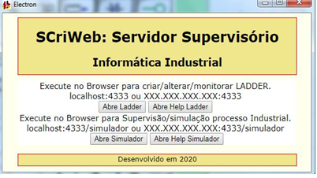Na versão browser pode-se abrir a simulação no endereço: scriweb.herokuapp.com/simulador
2.1 Da Simulação
Após editar o software ladder o usuário poderá simular o mesmo.
Para executar a simulação do programa utilize um dos três comados: RUN, RUN CICLO e RUN PASSO A PASSO.
RUN : Executa continuamente o programa, da primeira lógica a última, reiniciando-se em seguida. Esta é forma utilizada na maioria dos CLP comerciais.
RUN CICLO 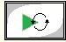: executa apenas um ciclo do programa, ou seja, vai da primeira a última lógica e para o programa. Para executar um novo ciclo de programaﾠ faz-se necessário pulsar novamente o botão RUN CICLO.
RUN PASSO A PASSO 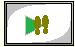: método didático que permite executar o programa passo a passo, a cada pulso no botão executa apenas uma função do ladder (um passo), convertido para booleano. o passo que está sendo executado pode ser visualizado no ambiente através do fundo amarelo na função, que indica que o ladder foi executado até o ponto indicado. Este método é fundamental para que o usuário entenda a ordem em que os comandos são interpretados em um CLP.
2.2 Enviar programa para CLP Virtual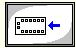
Para simulação do processo, antes de colocar o CLP no modo RUN é necessário carregar o software do ambiente de programação para o CLP Virtual.
Esta operação é necessária, para o software compilar o ladder criado, convertendo-o para a linguagem booleana e também para inicializar e carregar as variäveis.
2.3 A Representação Física do CLP
No ambiente de programação temos a representação de um CLP, onde podemos alterar o valor das 12 primeiras entradas, através do botão do mouse.
Também são representados nesta imagem as 12 primeiras saidas, com 12 lâmpadas virtuais, e algumas memórias internas do CLP.
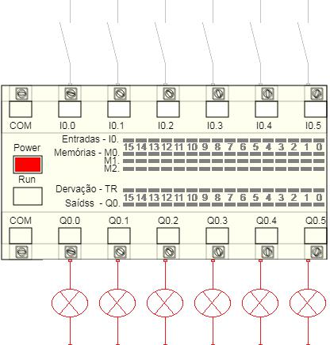
2.4 Da variável TR
A variável TR representa as ramifica?es internas do ladder, sendo utilizado para a conversão do ladder em booleano.
No início da varredura, todas as TR são desligadas, sendo ligadas a medidas que são interpretadas e as condições precedentes são verdadeiras. São utilizadas TR em todas as ligações verticais e nas ligacões horizontais após a interpretação de um comando de entrada (NA,NF, pulso, MOV, Comparação).
2.5 Da Edicão do Ladder
Para editar o ladder, seleciona-se a função na barra de ferramentas e logo apos seleciona-se o local na área de edição do ladder.
Após a operação de insersão solicita-se o nome do tag e o endereço da variável da função. Para as funções de temporizacão e contagem tambem são solicitados o limite minimo de contagem e seu tag. Para as funcões e comparação também solicita-se o tipo de função e os endereços 1 e 2 e respectivos tags. Após a edição do ladder, pode-se compilar o software. A compilação ocorre durante a operação de carga do software para o CLP VIRTUAL.
|
- Inserir ligação horizontal |
|
|
|
- Inserir Ligação Vertical |
|
- Inserir Contato NA |
|
|
- Inserir Contato NF |
|
|
- Inserir Rele Bobina |
|
|
- Inserir Rele SET |
|
|
- Inserir Rele RESET |
|
|
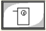 |
- Inserir TIMER. O Primeiro endereço T1,t1,t3,etc. O segundo endereço constante 10, 23, etc (em décimos de segundos) ou variável MO, M10, etc. |
|
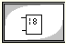 |
- Inserir Contador. O primeiro C1, C2, etc. O segundo Constante(5, 10, etc) ou variável (M5, M10, etc). |
|
- Inserir função Genérica. MOV, + e -. Movimenta operando. Dois operandos de 16 bits: M0, M5, Q0, I2, etc. Operado1 = Operando1+/- Operando2 |
|
|
- Rele de Pulso |
|
|
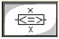 |
- Função de Comparacão. Funções permitidas: =, >, <, >= e <=. Dois operandos de 16bits. |
|
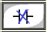 |
- Apagar instrução |
Também para editar existe um botão para apagar uma instrução e lógica, mover e copiar lógicas e para inserir espaços entre lógicas. No comando de lógicas aparece uma nova tela para entrada da posição inicial, número de linhas e posição destino.
| 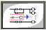 |
- Inserir lógicas a partir da lógica inicial e número de linhas. |
| 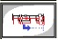 |
- Copiar lógicas, números de linhas para lógica destino. |
|
- Mover lógica, número de linhas , para lógica destino. |
|
| 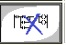 |
- Apagar lógicas, a partir da lógica inicial e número de linhas. |
2.6 Da Operacão de GRAVAR e LER Arquivos
E possível ler arquivos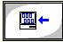 de qualquer diretório do sistema operacional, mas aconselha-se gravá-los no diret?io LADDER do software.
Como o software envia dados via WEB, para a segurança da operacão, não é permitido salvar arquivos 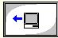diretamente no sistema, e quando solicitamos o salvamento do arquivo, na verdade o software fará o download do arquivo.
Para completar a operação você deverá move-lo para o diretório de utilização, recomendamos utilizar o diretório LADDER.
2.7 Da Configuração
A Configuração permite numerar o CLP.
Para acessar a tela de configuração. pressiome o botão 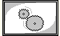
Aparecendo a tela abaixo.
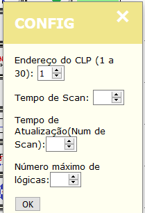
2.8 Da simulação
Ao simular o ladder os comandos da linguagem de programação podem aparecer em CINCO CORES diferentes, com o seguinte significado:
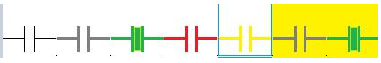PRETO - Não está deixando passar corrente VIRTUAL
VERDE - Liberando a corrente VIRTUAL
VERMELHO - ERR0 - variável Inexistente
AMARELO - ERR0 - Erro não previsto
FUNDO AMARELO - lógica atual no modo passo-a-passo
2.9 Das Variáveis Aceitas
são aceitas as seguintes variáveis com os seguintes indexes:
I : entrada
Q : saídas
M : memórias
C : contadores
T : Temporizadores
Constantes
Estas variáveis podem ser acessadas como registradores (16 bits), como por exemplo: I0, M2, Q1
Estas variáveis podem ser acessadas de forma binária, como: I0.0, I0.10, M2.15, M2.1, Q1.3, etc.
No CLP as entradas iniciam-se em ZERO e as saídas também.
Os contadores e temporizadores correspondem a um tipo especial, que podem indicar um registrador de 16 bits ou um endereço binário, seu acesso sempre será sem a utilização do ponto. Por exemplo: C1, T2, C0, T6, etc.
2.10 Das Funções\Comandos Ladder Aceitas
são aceitas as seguintes funções/comando no ambiente ladder:
Ligação horizontal;
Ligação vertical;
Contato NA;
Contato NF;
Rele bobina;
Rele Set;
Rele Reset;
Temporizador na energização;
Contador crescente;
Função genérica: aceita função MOV, + e -
Contato de pulso NA;
Funções de comparação: aceita: >, <, =, >=, <= e <>.
3. Do Desenvolvimento
3.1. Dos Arquivos e DiretÓRios
O aplicativo é composto pela seguinte estrutura de arquivos:
Diretório raiz: SCriWeb_DATA, informando a data de cria?o do arquivo no padr? ANOMESDIA
Subdiretório: SCriWeb
Subdiretório: LADDER
Subdiretório: Simulador
Subdiretório: node_modules, para as dependencias do node, este diretório é criado automaticamente quanto executa-se na raiz da aplicação "npm run install"
3.1.1 Subdiretório SCriWeb
Subdiretorio: public, para armazenamento dos script, desenhos, css da aplicação e manual de operação.
Arquivo: icon4.png, ícone da aplicação
Arquivo: package.json, script inicial da aplicação ELECTRON
Arquivo: Scriweb.html, página HTML padrao do Supervisãoio SCriWeb
Arquivo: ScriWeb.js, script da aplicação NODE e ELECTRON
Arquivo: ScriWebAbout, página ABOUT da aplicação.
Arquivo: ScriWebHelp, página de HELP
Arquivo: SCriWebConfig, página para configuração
Arquivo: Servidor.html, página html a ser visualizada com o ELECTRON
Arquivo: SimSCriWeb.html, página para montagem da aplicação do simulador industrial.
Arquivo: SimConfig.html, página para configuração da aplicação de simulador
Arquivo: SimHelp.html, página de help
Arquivo: SPLASH, tela inicial SCRIWEB.
3.1.2 Subdiretório LADDER:
Os arquivos fonte em ladder do tipo CSV para a simulação ladder, com a seguinte estrutura de arquivo:
Arquivo: XXX.csv, arquivo fonte programa ladder,
3.1.3 Subdiretório SIMULADOR:
Todos os arquivos utilizados para simular um processo industrial ou máquina, incluindo arquivos do tipo CSV e figuras.
Os arquivos do tipo CSV podem ser:
Arquivo: XXX.csv, arquivo com script especial para algum comando do programa XXX.csv
Arquivo: XXX.png, imagem
Este subdiretórios deve ser subdividido para cada aplicação diferente. Como exemplo:
CorteEVinco;
Nivel;
Dosagem.
3.1.4 Subdiretório PUBLIC:
Com sete subdiretórios e arquivos do manual.
Subdiretorio: CSS_LAD, com os arquivos de configura?o,
Subdiretório: IMG_LAD, com as imagens da aplica?o
Subdiretório: JS_LAD, com os javascript da aplica?o.
Subdiretório: CSS_SIM, com os arquivos de configura?o da simulação,
Subdiretório: IMG_SIM, com as imagens da simulação
Subdiretório: JS_SIM, com os javascript da simulação.
Subdiretório: ICON, com icones do aplicativo.
Subdiretório: Manual_SCriWeb_ladder, com as imagens do Manual ladder
Subdiretório: Manual_SCriWeb_SIMULADOR, com as imagens do Manual SIMULADOR
Arquivo: Manual_SCriWeb_ladder, este arquivo.
Arquivo: Manual_SCriWeb_simulador, arquivo de help do simulador.
3.1.4.1 Arquivos de Configuração (CSS)
páginas de estilos CSS para cada página da aplicação ladder (CSS_LAD) e simulador (CSS_SIM):
Arquivo: style.css - página principal;
Arquivo: style_about - página about;
Arquivo: style_config - página config;
Arquivo: style_help - página de help.
Arquivo: stylesim - página principal de simulação.
3.1.4.2 Arquivos de Imagens
Arquivos de imagens utilizados na aplicação, no ladder (IMG_LAD) e no simulador (IMG_SIM).
botoes4.png - imagens da barra de ferramenta, feito em três colunas, com imagens duplicadas: uma para cada estado;
ladder. png - imagens para o ambiente ladder. Cada imagens é composta por um conjunto de 7 cores diferentes: Preto, Preto Bold, Verde, Vermelho,Amarelo, Preto Bold com fundo Amarelo e Verde com fundo amarelo.
eletrico.png - imagens das chaves e lâmpadas para o CLP virtual, também com cinco cores.
LLV.png - imagem para a ligação vertical.
botoessim.png - imagens da barra de ferramenta, feito em uma coluna, com imagens duplicadas: uma para cada estado. Para a tela de simulação.
3.1.4.3 Arquivos JS
Na pasta js_lad (LADDER) e js_sim (SIMULADOR):
app_lad_config.js - aplicativo para configurações
appbotao.js - controle dos botãos
appcompila.js - para conversão do ladder para booleano
appeletrico.js - para controle do CLP, chaves e lâmpadas
appinicio.js - Carrega as funções javascript
appladder.js - Para o desenho do ladder (criar e desenhar)
appsocket.js - para troca de informações com o servidor
FileSaver.js - para gravacão de arquivos.
appbotaosim.js - controle dos botãos no simulador
appiniciosimulador.js - Inicialização tela simulador
appsimulador.js - Para o desenho do simulador (criar e desenhar)
3.2 Das variáveis:
3.2.1 Do Timer e counter
O array de TIMER e COUNTER tem dimensão maior que um, comportando outros sinalizadores aderentes ao controle da função.
O array do TIMER é dividido desta forma:
T[0] = valor binário do temporizador, confere se totalizador é maior que limite
T[1] = valor totalizado do temporizador
T[2] = Valor limite do temporizador.
O array do COUNTER desta forma:
C[0] = valor binario do contador, confere se totalizador for maior que limite
C[1] = valor totalizado do contador
C[2] = Valor limite do contador
C[3] = Flag para verificação do pulso na entrada do contador. Também utilizado para impedir resetar o contador no mesmo ciclo, fazendo que o ciclo de limite atingindo permaneça por no mínimo um ciclo completo do CLP. Neste caso o flag é setado com o valor 2.
3.2.2 Dos Arquivos Ladder
Arquivo Objeto: declara o arquivo em LADDER { _id, nome, var_1, tipo, var_2, ver, R-W, tag2, função};
lista._id = Identificador XXY, onde XX=linha e Y=coluna
lista.nome = nome do tag
lista.var_1 = variavel principal
tipo = 0:desativado, 1 :NA, 2: NF, 3:Bobina, 4:Set, 5:Reset, 6:Tempo, 7:contador, 8:função, 9:pulso, 10:comparacão, 11: horizontal, 12: reservado,
lista.var2 = variável secundario, no timer e counter o valor de preset
lista.ver = ligação vertical, 0:false 1:true, maior que 1 igual ao número do TR.
lista.R-W = Leitura(1) ou Escrita(2)
lista.tag2 = nome do tag da variável 2
lista.funcao = nome da funcao genérica